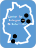
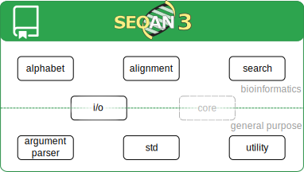
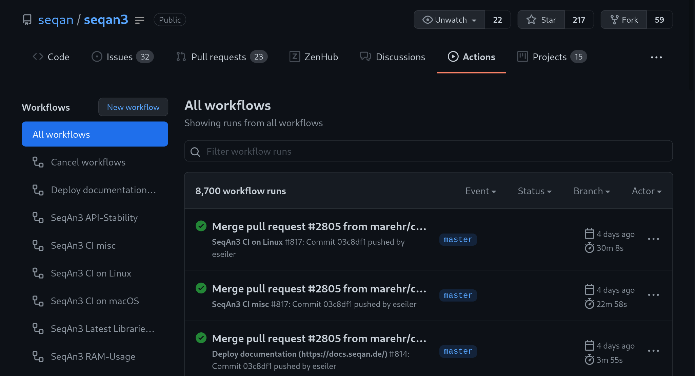
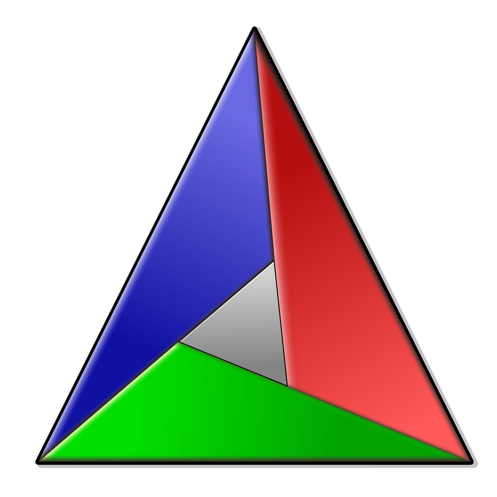

 UM 2021
Introduction to
Marcel Ehrhardt
Free University Berlin, de.NBI
Enrico Seiler
Max Planck Institute for Molecular Genetics
Library Overview
- Quick Facts:
- Sequence Analysis Library
- C++17/20 Code with concepts
- BSD 3-Clause License
 v3.0.3
v3.0.3- Mature Test Infrastructure
- ~98% Code Coverage

- Alphabet Module
- Biological Sequence Representation
- Sequence Transformation
// 5′‑ATGCCACGAGTTGAC‑3′
seqan3::dna4_vector sequence{"ATGCCACGAGTTGAC"_dna4};
// 5′‑TACGGTGCTCAACTG‑3′
auto complement = sequence | seqan3::views::complement;
// 3′‑TACGGTGCTCAACTG‑5′ = "GTCAACTCGTGGCAT"_dna4
auto reverse_complement = complement | std::views::reverse;
// Met-Pro-Arg-Val-Asp = "MPRVD"_aa27
auto amino_acid_sequence = sequence
| seqan3::views::translate_single;
- Alignment Module
- Pairwise Sequence Alignment
- Different Algorithms depending on Configuration
- Gapped Sequence Representation
auto scoring_scheme = seqan3::nucleotide_scoring_scheme{
seqan3::match_score{4},
seqan3::mismatch_score{-5}};
auto config =
seqan3::align_cfg::method_global{} |
seqan3::align_cfg::scoring_scheme{scoring_scheme} |
seqan3::align_cfg::gap_cost_affine{
seqan3::align_cfg::open_score{0},
seqan3::align_cfg::extension_score{-1}
} |
seqan3::align_cfg::parallel{5} |
seqan3::align_cfg::output_score |
seqan3::align_cfg::output_alignment;
auto sequence1 = "ATGCCACGAGTTGAC"_dna4;
auto sequence2 = "ACGCCACGAGTGAC"_dna4;
auto sequence_pair = std::tie(sequence1, sequence2);
auto alignments =
seqan3::align_pairwise(sequence_pair, config);
for (seqan3::alignment_result & result: alignments)
{
// ATGCCACGAGTTGAC
// | ||||||||| |||
// ACGCCACGAGT-GAC
auto & [gapped_sequence1, gapped_sequence2]
= result.alignment();
// matches: 13, mismatches: 1, indel: 1
// score: 13 * 4 + 1 * - 5 + 1 * -1 = 46
std::signed_integral auto score = result.score();
}
- Search Module
- Indexed Based Full-Text Search
- Storing/Loading Indices
- Different Algorithms depending on Configuration
seqan3::dna4_vector genome{
"ATCTGACGAAGGCTAGCTAGCTAAGGGA"_dna4};
seqan3::fm_index index{genome}; // build index
{ // storing the index
std::ofstream os{"my_index.index", std::ios::binary};
cereal::BinaryOutputArchive oarchive{os};
oarchive(index);
}
{ // loading the index
std::ifstream is{"my_index.index", std::ios::binary};
cereal::BinaryInputArchive iarchive{is};
iarchive(index);
}
auto config =
seqan3::search_cfg::hit_all{} |
seqan3::search_cfg::max_error_total{
seqan3::search_cfg::error_count{1}} |
seqan3::search_cfg::parallel{8} |
seqan3::search_cfg::output_query_id{} |
seqan3::search_cfg::output_reference_id{} |
seqan3::search_cfg::output_reference_begin_position{};
std::vector<seqan3::dna4_vector> queries{
"GCT"_dna4, "ACCC"_dna4};
auto results = seqan3::search(queries, index, config);
for (seqan3::search_result & result : results)
{
// 0 - GCT
size_t query_id = result.query_id();
// ATCTGACGAAGGCTAGCTAGCTAAGGGA
// e.g. 11, 15, 19
size_t position = result.reference_begin_position();
}
- Input/Output Module
- Read/Write Files
- Convert Files
- File Formats
- Sequence Files (
.fa,.fq,.embl,.gbk) - SAM Files (
.sam,.bam)
- Sequence Files (
seqan3::sequence_file_input fin{"my.fastq"};
for (seqan3::sequence_record & record : fin)
{
// e.g. "sequence1"
std::string id = record.id();
// e.g. "ATCTGACGAAGGCTAGCTAGCTAAGGGA"_dna5
seqan3::dna5_vector sequence = record.sequence();
// e.g. "##!!####!!####!!####!!####!!"_phred42
std::vector<seqan3::phred42> qualities
= record.base_qualities();
}
seqan3::sequence_file_input fin{"my.fastq"};
seqan3::sequence_file_output fout{"my.fasta"};
for (seqan3::sequence_record & record : fin)
{
fout.push_back(record);
}
seqan3::sequence_file_input fin{"my.fastq"};
seqan3::sequence_file_output fout{"my.fasta"};
fout = fin;
Test Infrastructure


- API Stability
- How to ensure that we do not break our API?
- Idea:
- Use the
tests of the last release - and build them with the current library version.
- Use the
What's new?
- v3.0.3 statistics
- 7 months
- 11 contributors
- 923 commits
- 1,750 file changes
- 75,000 insertions / 50,000 deletions
- v3.0.3 milestones
- First release that should just compileTM after upgrading
- We made a great push for the first stable v3.1.0 release!
- Declared many entities as API-stable / experimental
- v3.0.3 new features
- New Phred Quality Score alphabet
seqan3::phred94 - New
seqan3::literalsnamespaceusing namespace seqan3::literals; seqan3::dna4 adenine = 'A'_dna4; - Records of I/O files have member functions
seqan3::sequence_file_input fin{"my.fastq"}; for (seqan3::sequence_record & record: fin) std::cout << "id: " << record.id() << '\n';
A peek at future releases
- v3.1.0
- Release Candidate v3.1.0-rc.1 already published.
- Basically v3.0.3, but without all the "deprecated" files.
- Will be the first "stable" Release.
- Last Release with g++-7/8 support.
- v3.2.x
- Requires ≥ g++-9.
- Will iron-out non-standard C++20 code.
- A re-write of our internal iterator/ranges/views implementation.
- Will support clang for the first time.
- And with that the complete llvm eco-system (hopefully).
- Standardized C++ Project Layout
doc/ APP documentation include/ APP header files lib/ external libraries (default: SeqAn3) src/ APP source files test/ APP tests - Open Software Stack:
-  CMake
 GitHub Actions
GitHub Actions- BSD 3-Clause License
- Standardized
test/api/ API tests benchmark/ Benchmarks cli/ CLI tests coverage/ Code Coverage data/ Test Data - Reproducible Benchmarks
- Continuous integration (CI)
- GitHub Actions
- MacOS
- Linux
- Documentation
- Successful use cases:
- SeqAn3 Apps
- SeqAn2 Apps
- C++ Library
- Future Features (planned):
- App Template-Updater (PR on new Release)
- Continuous Deployment (CD)
- Easier deployment to

git clone https://github.com/seqan/raptor mkdir raptor/build && cd raptor/build cmake .. make make install